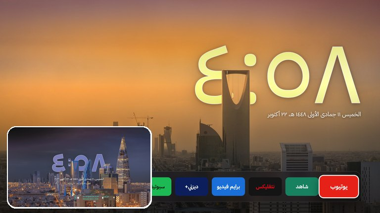
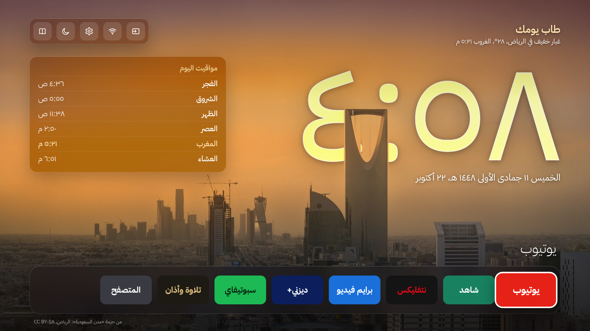
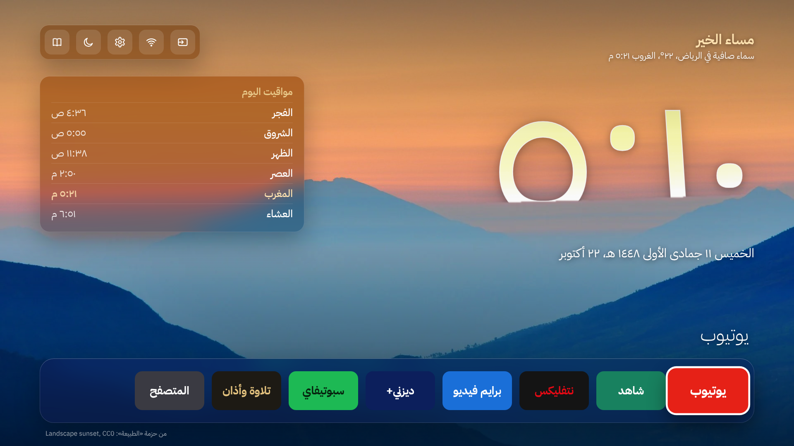

المظهر
التركيز يعرض الشكل خلف اللوحة، وموافق يثبّته، ورجوع يرجّع شكلك
أشكال جاهزة

شكلك المعتاد الحالي

منظر وساعة

صورة فقط
كل جزء وحده
التخطيطتلفزيونك
الخلفيةيمين ويسار للاختيار

صوري وحزم الصور الحالي

الآفاق
الساعةزجاجية خلف الصورة
شكل التطبيقاتمربعات ملونة
الألوان والإضاءةتلقائي
موافق يثبّت «الآفاق»، ورجوع يرجّع «صوري وحزم الصور» كما كانت